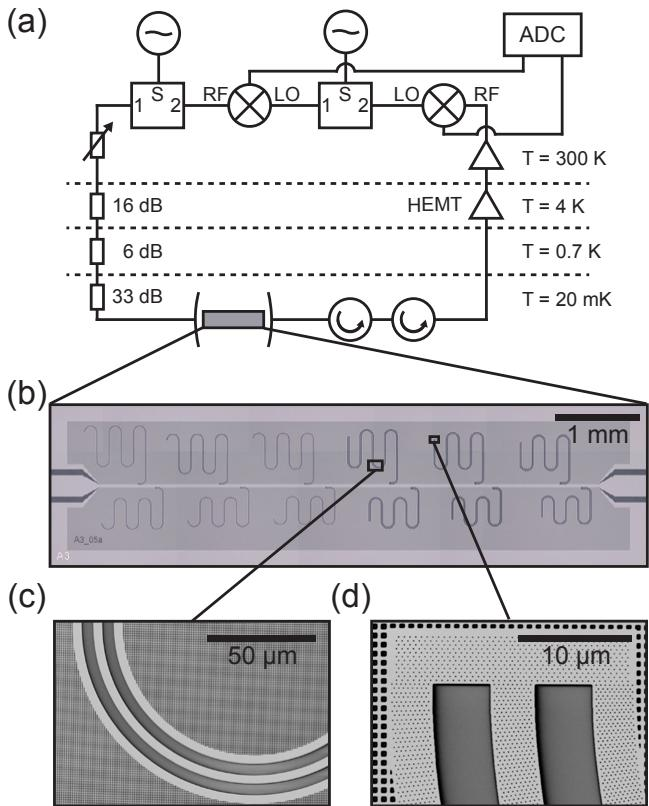
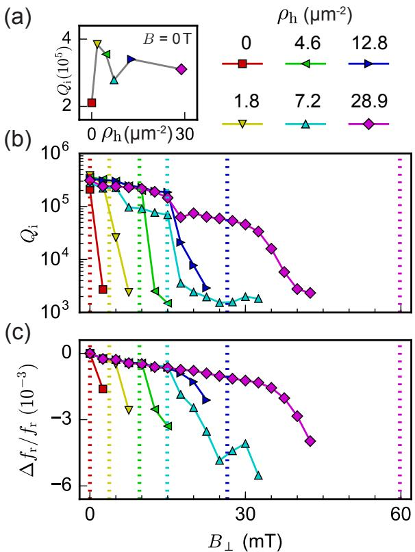
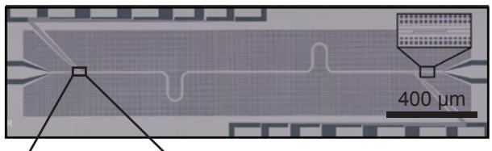
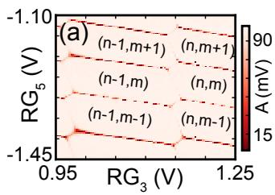

问题：磁场里的三类损耗来源
零场下超导 CPW 腔的 已可达 10⁶ 量级，手段是压制 TLS 介电损耗与红外辐射诱导的准粒子。但半导体与拓扑量子计算方案普遍需要接近或超过 1 T 的磁场：传统磁屏蔽完全失效，常用铝材的超导也被直接摧毁（块材铝 仅约 10 mT）。高 的二类超导材料（MoRe、TiN、NbTiN）能让超导在强场中存活，却引入新的耗散机制——只要磁场超过极低的第一临界场（ 约 μT 量级），涡旋便进入薄膜：高频场驱动下涡旋振荡耗散、并引起谐振频率涨落。耐磁场谐振腔的核心因此不是”扛住磁场”，而是”管住涡旋”：少产生、强钉扎。
对策一：薄膜几何增强成核场
把膜厚 做到远小于穿透深度 时，沿膜面方向的磁场被整体排出，第一个涡旋成核所需的临界场提升为
其中 是磁通量子、 是膜厚。对 22 nm 膜，理论上 T——比块材高出许多个量级。脏极限二类超导体的穿透深度由薄膜电阻率给出：
其中 是正常态电阻率、 是零温超导能隙、 为真空磁导率；本工作 NbTiN 膜的 约 350–480 nm，因此 8 nm 与 22 nm 膜都满足 。
实验用 8/22/100/300 nm 四种厚度的无孔谐振腔检验这一效应：厚膜（100/300 nm）在 mT 即出现严重的非均匀展宽、谐振消失；薄膜则只剩轻度展宽——涡旋数目确实大幅减少。但薄膜并非完美：剩存少数涡旋的退钉扎事件以秒级时间尺度发生，表现为高品质因数谐振随时间的涨落；实际成核场也远低于理论值，来自磁场的小失配与局域偏差。逃不掉的涡旋需要第二件工具。
对策二：人工缺陷孔钉扎
膜中的缺陷局域降低超导序参量，形成涡旋的能量势阱——涡旋坐进缺陷便被钉住、不再振荡耗散。本文把缺陷做成光刻定义的孔：直径 100 nm（小于涡旋尺度，），排成六角阵列，与谐振腔同一步 EBL+RIE 工艺成型，孔密度 从 0 到 28.8 μm⁻² 可调。孔离开 CPW 边缘至少 1 μm，避免干扰集中在边缘的电流分布。
孔密度可以直接换算成一个”阈值场” ：垂直磁场大到每个孔都吸入一个涡旋时（，本文 0–59.69 mT），多余的涡旋只能被薄膜缺陷与间隙钉扎弱钉住。场冷测量完美演示了这幅图像： 时所有涡旋都被孔捕获， 保持 ；越过 后 陡降——自由涡旋开始巡游。频率分数漂移 呈现同样的转折。零场下加孔反而略降 （金属–真空界面增大了 TLS 参与面）， 后涡旋间开始重叠、超导均匀性假设失效；但”孔最多”的谐振腔靠间隙钉扎把平坦响应维持到 mT。

_器件与测量：(a) 外差探测线路测复数透射；(b) 多支 λ/4 谐振腔频分复用到公共馈线、周围是图形化地平面；(c)(d) 无孔与有孔超导 CPW 腔的 SEM 显微图——孔阵在谐振腔光刻的同一步中成型。图源：Kroll et al. (2018), Fig. 1。_

_孔钉扎的定量验证：(a) 零场下对孔密度
的依赖（非零
捕获局域杂散场涡旋反而提升
，过高
因界面损耗略降）；(b)
随垂直磁场
的变化，彩色竖线为各密度的阈值场
——
时
保持
，越过阈值陡降；(c) 频率分数漂移呈现同样转折。图源：Kroll et al. (2018), Fig. 3。_
组合结果与混合系统演示
把两条对策叠加——22 nm 薄膜（减少涡旋产生）+ 优化孔密度（钉住所剩涡旋）——得到最终指标：单光子功率下 保持到 T 与 mT，谐振频率稳定、无慢漂移。同样的材料逻辑也适用于放大链前端：NbTiN 动力学电感的三级阻抗工程参量放大器（KIMPA）凭借高临界电流与高 继承了强磁场/较高温工作能力，输出饱和功率比约瑟夫森结基高约 25 dB——见参量放大器”动力学电感阻抗工程”一节。
应用演示是混合 cQED 的标准场景：λ/2 谐振腔两端各集成一根 InSb 纳米线，细栅定义双量子点，Ti/Al 接触引出直流。在 T 下用腔的微波响应代替直流输运做电荷传感——扫描细栅电压时，量子点与电极间的电子跃迁是耗散过程，腔响应随之出现 Honeycomb 型电荷稳定图。腔读出不需要纳米线源漏偏置，天然规避了纳米线接触电阻与无序的限制。

混合器件的光学显微图：λ/2 谐振腔两端各键合一根 InSb 纳米线，局域细栅（Ti/Al 接触）定义双量子点——耐磁场腔与半导体量子点的集成单元。图源：Kroll et al. (2018), Fig. 5(a)。
_T 下的腔读出电荷稳定图：固定探针频率在
、扫描纳米线细栅电压，量子点–电极跃迁的耗散使腔响应画出 Honeycomb 图样——无需直流偏置即可读取双量子点的电荷构型。图源：Kroll et al. (2018), Fig. 6(a–b)。_
适用条件与边界
- 垂直磁场仍是短板： 容限只有数十 mT 量级（受孔密度与间隙钉扎上限限制），面内容限则是特斯拉级——器件设计应让腔平面尽量平行于磁场，矢量磁体的对准精度直接影响成核场。
- 孔有代价：零场 略降（界面 TLS）、过高密度适得其反；孔密度要在”钉扎容量”与”额外损耗”间取优。
- 薄膜的频率敏感性：高动态电感分数的薄膜腔对 涨落敏感，频率复现性不如厚膜——这与纳米线几何方案的局限同源。
- 与替代方案的取舍：无地平面的纳米线腔可达 @ 6 T / @ 350 mT，但光刻难度高、频率对 极度敏感；图形化 CPW 路线胜在可靠性与可扩展性。
与其他概念的关系
- 高阻抗谐振腔：高动态电感材料（NbTiN/NbN）天然具备高 ，是耐磁场与高阻抗两条需求的共同材料基础；SQUID 阵列腔则相反，磁通敏感与强磁场根本冲突。
- 自旋–光子耦合：自旋比特的 Zeeman 劈裂需要约 1 T 磁场，耐磁场腔是该体系的准入硬件；本文的 1 T 纳米线读出即其直接应用。
- 电荷–光子耦合：腔读出电荷稳定图（Honeycomb 耗散图样）是不依赖直流输运的电荷传感方式，与量子点–腔的电荷耦合共享同一物理。
- 界面缺陷：孔阵增加的金属–真空界面正是 TLS 损耗的来源之一，零场品质因子与磁场容限之间的张力由此而来。
- 低温电子学：强磁场环境中的环形器等测量元件同样需要磁屏蔽处理，是混合 cQED 测量链的配套约束。
参考文献
- Kroll, J. G., Borsoi, F., van der Enden, K. L., Uilhoorn, W., de Jong, D., Quintero-Pérez, M., van Woerkom, D. J., Bruno, A., Plissard, S. R., Car, D., Bakkers, E. P. A. M., Cassidy, M. C., Kouwenhoven, L. P. Magnetic-field resilient superconducting coplanar waveguide resonators for hybrid cQED experiments. Physical Review Applied 11, 064053 (2019). DOI: 10.1103/PhysRevApplied.11.064053；arXiv:1809.03932（QAtlas 缓存：1809.03932）。
完整文献库（含各篇站内全文页）见 参考文献库。